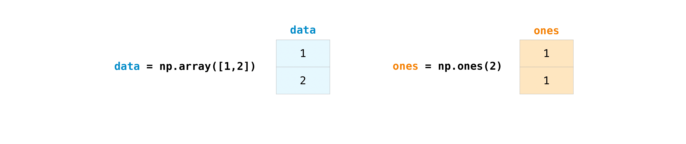

Welcome to NumPy!
Contents
Welcome to NumPy!#
Installing NumPy#
Most Python distributions include NumPy; if you do not have it installed, you can install it with:
conda install numpy
or
pip install numpy
Importing NumPy#
To use NumPy, you need to import it. The convention for importing NumPy is:
import numpy as np
What is the difference between a Python list and a NumPy array?#
NumPy gives you an enormous range of fast and efficient ways of creating arrays and manipulating numerical data inside them.
Python list can contain different data types within a single list, all of the elements in a NumPy array should be homogeneous.
Mathematical operations that are meant to be performed on arrays would be extremely inefficient if the arrays weren’t homogeneous.
What is an Array?#
An array is a central data structure of the NumPy library.
An array is a grid of values, and it contains information about the raw data, how to locate an element, and how to interpret an element.
It has a grid of elements that can be indexed in various ways.
The elements are all of the same type, referred to as the array dtype.
An array can be indexed by:
a tuple of nonnegative integers
by booleans, by another array, or by integers.
Properties of an array:
The
rankof the array is the number of dimensions.The
shapeof the array is a tuple of integers giving the size of the array along each dimension.
Initializing Arrays#
import numpy as np
a = np.array([1, 2, 3, 4, 5, 6])
or
a = np.array([[1, 2, 3, 4], [5, 6, 7, 8], [9, 10, 11, 12]])
Accessing an element#
We can access the elements in the array using square brackets.
When you’re accessing elements, remember that indexing in NumPy starts at 0.
That means that if you want to access the first element in your array, you’ll access element “0”.
print(a[0])
[1 2 3 4]
Array Types#
You might occasionally hear an array referred to as a “ndarray,” which is shorthand for “N-dimensional array.” An N-dimensional array is simply an array with any number of dimensions.
You might also hear 1-D, or one-dimensional array, 2-D, or two-dimensional array, and so on. The NumPy ndarray class is used to represent both matrices and vectors.
A vector is an array with a single dimension (there’s no difference between row and column vectors)
A matrix refers to an array with two dimensions
For 3-D or higher dimensional arrays, the term tensor is also commonly used.
Attributes of an Array#
An array is usually a fixed-size container of items of the same type and size. The number of dimensions and items in an array is defined by its shape.
The shape of an array is a tuple of non-negative integers that specify the sizes of each dimension.
In NumPy, dimensions are called axes. This means that if you have a 2D array that looks like this:
a = np.array([[0., 0., 0.],[1., 1., 1.]])
a.shape
(2, 3)
Your array has 2 axes. The first axis has a length of 2 and the second axis has a length of 3.
Modifying Arrays#
The contents of an array can be accessed and modified by indexing or slicing the array.
Unlike the typical container objects, different arrays can share the same data, so changes made on one array might be visible in another.
a[1,2] = 100
print(a)
[[ 0. 0. 0.]
[ 1. 1. 100.]]
Creating Basic Arrays#
To create an NumPy array, you can use the function np.array()

a = np.array([1,2,3])
Other array-creation methods#
Zeros#
print(np.zeros(2))
[0. 0.]
Ones#
print(np.ones(2))
[1. 1.]
An Empty array#
An empty array is filled with random values from the current memory state in the RAM.
This is way more efficient if initializing large arrays because you do not have to write the bits
%%time
a = np.zeros((10000,1000,1000))
CPU times: total: 0 ns
Wall time: 134 ms
%%time
del(a)
a = np.empty((10000,1000,1000))
CPU times: total: 0 ns
Wall time: 11 ms
An ordered array#
np.arange(4)
array([0, 1, 2, 3])
Or evenly spaced array
np.arange(2, 9, 2)
array([2, 4, 6, 8])
np.linspace(0, 10, num=5)
array([ 0. , 2.5, 5. , 7.5, 10. ])
Changing the Data Type#
Data type is important because it:
Determines the precision of a value stored in memory
Determines the amount of memory required to store a value
Determines the computational complexity of each operation
x = np.ones(2, dtype=np.int64)
x.dtype
dtype('int64')
Adding, Removing, and Sorting Elements#
Sorting an element is simple with np.sort(). You can specify the axis, kind, and order when you call the function.
If you start with this array:
arr = np.array([2, 1, 5, 3, 7, 4, 6, 8])
You can quickly sort the numbers in ascending order with:
np.sort(arr)
array([1, 2, 3, 4, 5, 6, 7, 8])
Other Sort Options:
argsort, which is an indirect sort along a specified axis,
lexsort, which is an indirect stable sort on multiple keys,
searchsorted, which will find elements in a sorted array, and
partition, which is a partial sort.
Concatenating Arrays#
If you start with these arrays:
a = np.array([1, 2, 3, 4])
b = np.array([5, 6, 7, 8])
You can concatenate them with np.concatenate()
np.concatenate((a, b))
array([1, 2, 3, 4, 5, 6, 7, 8])
Or
x = np.array([[1, 2], [3, 4]])
y = np.array([[5, 6]])
np.concatenate((x, y), axis=0)
array([[1, 2],
[3, 4],
[5, 6]])
Determining the shape and size of an array?#
ndarray.ndim will tell you the number of axes, or dimensions, of the array.
ndarray.size will tell you the total number of elements of the array. This is the product of the elements of the array’s shape.
ndarray.shape will display a tuple of integers that indicate the number of elements stored along each dimension of the array. If, for example, you have a 2-D array with 2 rows and 3 columns, the shape of your array is (2, 3).
array_example = np.array([[[0, 1, 2, 3],
[4, 5, 6, 7]],
[[0, 1, 2, 3],
[4, 5, 6, 7]],
[[0 ,1 ,2, 3],
[4, 5, 6, 7]]])
To find the number of dimensions of the array, run:
array_example.ndim
3
To find the total number of elements in the array, run:
array_example.size
24
And to find the shape of your array, run:
array_example.shape
(3, 2, 4)
Reshaping an Array#
Using arr.reshape() will give a new shape to an array without changing the data.
The array you want to produce needs to have the same number of elements as the original array.
If you start with an array with 12 elements, you’ll need to make sure that your new array also has a total of 12 elements.
a = np.arange(6)
print(a)
[0 1 2 3 4 5]
b = a.reshape(3, 2)
print(b)
[[0 1]
[2 3]
[4 5]]
There are a lot of options for reshaping arrays, the best way to learn these is to look at the doc strings
??np.reshape
Adding and Removing an Axis#
You can use np.newaxis and np.expand_dims to increase the dimensions of your existing array.
Using np.newaxis will increase the dimensions of your array by one dimension when used once. This means that a 1D array will become a 2D array, a 2D array will become a 3D array, and so on.
For example, if you start with this array:
a = np.array([1, 2, 3, 4, 5, 6])
a.shape
(6,)
You can use np.newaxis to add a new axis:
a2 = a[np.newaxis, :]
a2.shape
(1, 6)
You can remove an axis using np.squeeze
a2.squeeze()
array([1, 2, 3, 4, 5, 6])
Indexing and Slicing#
You can index and slice NumPy arrays in the same ways you can slice Python lists.
data = np.array([1, 2, 3])
data[1]
2
data[0:2]
array([1, 2])
data[1:]
array([2, 3])
data[-2:]
array([2, 3])
You can visualize it this way:

If you want to select values from your array that fulfill certain conditions, it’s straightforward with NumPy.
a = np.array([[1 , 2, 3, 4], [5, 6, 7, 8], [9, 10, 11, 12]])
You can easily print all of the values in the array that are less than 5.
print(a[a < 5])
[1 2 3 4]
Or numbers that are divisible by 2
divisible_by_2 = a[a%2==0]
print(divisible_by_2)
[ 2 4 6 8 10 12]
Or you can select elements that satisfy two conditions using the & (and) and | (or) operators:
c = a[(a > 2) & (a < 11)]
print(c)
[ 3 4 5 6 7 8 9 10]
You can also make use of the logical operators & and | in order to return boolean values that specify whether or not the values in an array fulfill a certain condition. This can be useful with arrays that contain names or other categorical values.
five_up = (a > 5) | (a == 5)
print(five_up)
[[False False False False]
[ True True True True]
[ True True True True]]
You can also find the index that satisfies a condition using np.argwhere
ind = np.argwhere((a > 2) & (a < 11))
print(ind)
[[0 2]
[0 3]
[1 0]
[1 1]
[1 2]
[1 3]
[2 0]
[2 1]]
Or you can find a boolean and use it for indexing
ind = np.where((a > 2) & (a < 11))
print(a[ind])
[ 3 4 5 6 7 8 9 10]
How to create arrays from existing data?#
Let’s say you have this array:
a = np.array([1, 2, 3, 4, 5, 6, 7, 8, 9, 10])
You can create a new array from a section of your array any time by specifying where you want to slice your array
arr1 = a[3:8]
arr1
array([4, 5, 6, 7, 8])
You grabbed a section of your array from index position 3 through index position 8.
You can also stack two existing arrays, both vertically and horizontally. Let’s say you have two arrays, a1 and a2:
a1 = np.array([[1, 1],
[2, 2]])
a2 = np.array([[3, 3],
[4, 4]])
You can stack them vertically with vstack:
np.vstack((a1, a2))
array([[1, 1],
[2, 2],
[3, 3],
[4, 4]])
Or stack them horizontally with hstack:
np.hstack((a1, a2))
array([[1, 1, 3, 3],
[2, 2, 4, 4]])
Copies and Views#
When operating and manipulating arrays, their data is sometimes copied into a new array and sometimes not. This is often a source of confusion for beginners. There are three cases:
No Copy at All#
Simple assignments make no copy of objects or their data.
a = np.array([[ 0, 1, 2, 3],
[ 4, 5, 6, 7],
[ 8, 9, 10, 11]])
b = a
b is a
True
Python passes mutable objects as references, so function calls make no copy.
def f(x):
print(id(x))
f(a)
f(b)
2406830056496
2406830056496
See, they are the same; this is useful if you want to save memory
View or Shallow Copy#
Different array objects can share the same data. The view method creates a new array object that looks at the same data.
c = a.view()
c is a
False
c.base is a # c is a view of the data owned by a
True
c = c.reshape((2, 6)) # a's shape doesn't change
a.shape
(3, 4)
c[0, 4] = 1234 # a's data changes
a
array([[ 0, 1, 2, 3],
[1234, 5, 6, 7],
[ 8, 9, 10, 11]])
Note that operations on the object can be applied without affecting the original object. If a value is changed, it does affect the original object.
Deep Copy#
The copy method makes a complete copy of the array and its data
This will consume the same amount of memory as the original object
d = a.copy() # a new array object with new data is created
d is a
False
d.base is a # d doesn't share anything with a
False
d[0, 0] = 9999
a
array([[ 0, 1, 2, 3],
[1234, 5, 6, 7],
[ 8, 9, 10, 11]])
Basic array operations#
Once you’ve created your arrays, you can start to work with them. Let’s say, for example, that you’ve created two arrays, one called “data” and one called “ones”

You can add the arrays together with the plus sign.

data = np.array([1, 2])
ones = np.ones(2, dtype=int)
data + ones
array([2, 3])
You can do all operations on arrays

data - ones
array([0, 1])
data * data
array([1, 4])
data / data
array([1., 1.])
Basic operations are simple with NumPy. If you want to find the sum of the elements in an array, you will use sum()`. This works for 1D arrays, 2D arrays, and arrays in higher dimensions.
a = np.array([1, 2, 3, 4])
a.sum()
10
To add the rows or the columns in a 2D array, you would specify the axis.
If you start with this array:
b = np.array([[1, 1], [2, 2]])
b.sum(axis=0)
array([3, 3])
or
b = np.array([[1, 1], [2, 2]])
b.sum(axis=1)
array([2, 4])
Learn More about basic operations here
Besides sum there are a plethora of built-in calculations. You can discover more here
Broadcasting#
There are times when you might want to carry out an operation between an array and a single number (also called an operation between a vector and a scalar) or between arrays of two different sizes.
For example, your array (we’ll call it “data”) might contain information about distance in miles, but you want to convert the information to kilometers. You can perform this operation with:
data = np.array([1.0, 2.0])
data * 1.6
array([1.6, 3.2])

NumPy understands that multiplication should happen with each cell.
Broadcasting is a mechanism that allows NumPy to perform operations on arrays of different shapes.
The dimensions of your array must be compatible, for example, when the dimensions of both arrays are equal or when one of them is 1.
If the dimensions are not compatible, you will get a ValueError.
Finding Unique Items and Counts#
You can find the unique elements in an array easily with np.unique
For example, if you start with this array:
a = np.array([11, 11, 12, 13, 14, 15, 16, 17, 12, 13, 11, 14, 18, 19, 20])
You can use np.unique to print the unique values in your array:
unique_values = np.unique(a)
print(unique_values)
[11 12 13 14 15 16 17 18 19 20]
To get the indices of unique values in a NumPy array (an array of first index positions of unique values in the array), just pass the return_index argument in np.unique() as well as your array.
unique_values, indices_list = np.unique(a, return_index=True)
print(indices_list)
[ 0 2 3 4 5 6 7 12 13 14]
There are many more options that can be read in the doc string
?? np.unique
Transposing and Reshaping#
It’s common to need to transpose your matrices. NumPy arrays have the property T that allows you to transpose a matrix.
data = np.array([[1, 2], [3, 4], [5, 6]])
data.T
array([[1, 3, 5],
[2, 4, 6]])
You may also need to switch the dimensions of a matrix. This can happen when, for example, you have a model that expects a specific input shape that is different from your dataset. This is where the reshape method can be helpful. You simply need to pass in the new dimensions that you want for the matrix.

data.reshape(2, 3)
array([[1, 2, 3],
[4, 5, 6]])
data.reshape(3, 2)
array([[1, 2],
[3, 4],
[5, 6]])
To learn more about transposing and reshaping arrays, see transpose and reshape.